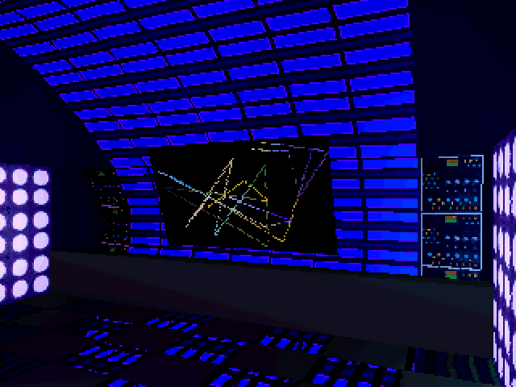
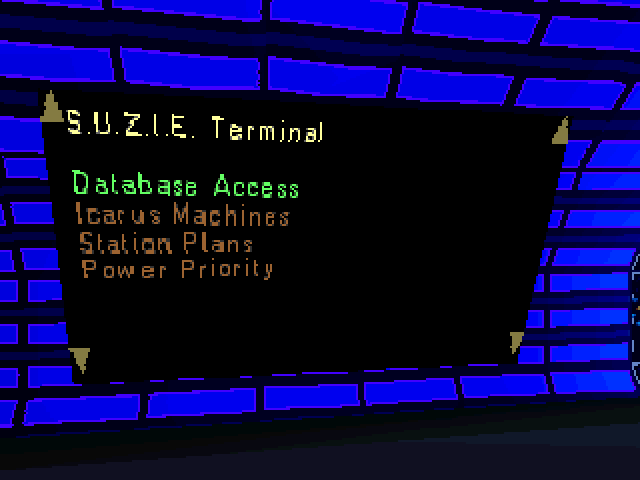
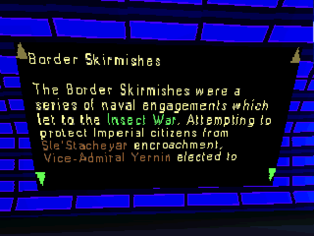
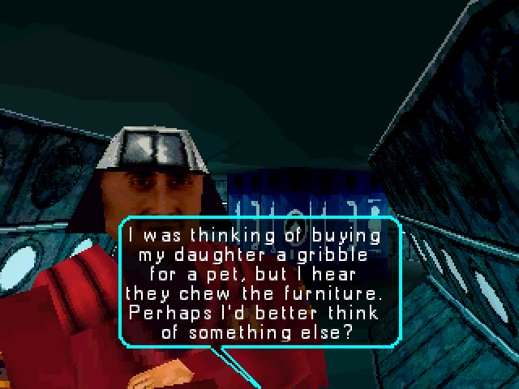

Sentient is an ambitious video game developed by Psygnosis and released in 1997. Set on a disaster-prone space station orbiting a star, the game provides the player with substantial freedom while endowing non-player characters with a level of agency that was uncommon for the time. Boasting 12 endings, tens of thousands of lines of NPC dialogue, and a story with some decidedly strange twists and turns, Sentient is a game with much to discover. Unfortunately, its controls are awkward and the extent to which it leaves the player to their own devices is perhaps excessive. Together, this article and this article provide an excellent overview of the game.
One feature of Sentient is an extensive database filled with largely-superfluous information about the game's characters and setting. This database is accessed through "S.U.Z.I.E. terminals" (S.U.Z.I.E. being the station's on-board artificial intelligence) scattered around the station, all of which display an animation resembling the "Mystify Your Mind" screensaver included with Windows 95 while not in use.

The contents of the database are stored in the SUZIE_HYP section of the MISC.VSR file (at least in the Windows release of the game) and the format is fairly simple. I wrote a small script to parse this file and save each database entry as an HTML file; the resulting collection of pages is presented here.
For an experience closest to browsing the database in-game, start with the database main page and follow the links.

In-game, some links point to different versions of the destination entry depending on the player's security clearance: higher clearance levels yield expanded entries with additional details (typically related to the nefarious machinations of the "New Hegemony") or completely new information (e.g., higher-clearance personnel records include commentary by the station's undercover political officer). Each link may have up to four destinations, presumably corresponding to four clearance levels (although it only appears possible to obtain three in the game). On this site, links that vary with clearance are broken into multiple adjacent links, each indicating the clearance levels for which its destination is available. Some examples:

An easier way to browse the database is to use the index of all entries, which includes those that aren't accessible in-game because no other entries link to them (the in-game database doesn't include an index). A list of only those entries to which no links exist is available here.
Please note that, while an accurate reflection of the contents of the MISC.VSR file, the text-based presentation of the Icarus Machines, Station Plans, and Power Priority sections of the database on this site differs substantially from their representations in-game:
Unfortunately it's hard to know who wrote these database entries. Neither Sentient's credits cutscene (which can be watched on YouTube here) nor its manual explicitly identify any writing staff. In this interview with three members of the development team from 2010, Colin Burges (listed in the "Programming" section of the credits) states that some of the writing was outsourced to an American company, but that most of it had to be rewritten by "Julian [Hicks] and co" (Julian Hicks is listed in the "Production" section of the credits).
